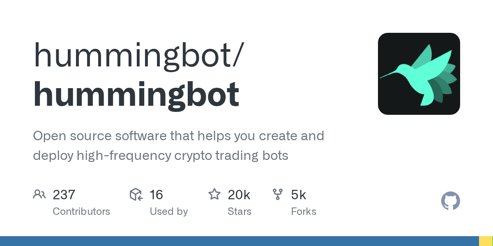

05 GitHub
hummingbot/hummingbot
가상자산 자동매매 봇 운영판, 이번 버전 점검
★ 20,165이번 주 +145PythonApache-2.0 사내 사용 가능릴리스 v2.17.0 (09.22)최근 활동 09.22테스트 있음예제 없음AGENTS.md 없음

자동매매 도구는 전략 자체보다 운영 체계가 더 중요할 때가 많다. 설치 방법, 키 보관, 모의 거래, 거래소 연결, 컨테이너 실행이 모두 맞물리기 때문이다. 이 저장소는 그런 운영 요소를 오랫동안 다듬어 온 대표 사례다. 이번 주에는 새 릴리스가 올라와 성숙도 측면에서도 눈에 띈다.
무엇을 하는 물건인가
이 도구는 여러 거래소에서 자동매매 전략을 만들고 돌리게 돕는다. 사람이 시세창을 계속 보며 주문을 넣고 취소하던 일을 규칙으로 옮겨 반복 실행하게 만드는 성격이다. 이 도구가 없으면 거래소마다 다른 접속 방식과 주문 규칙을 직접 맞춰야 한다. 모의 거래부터 실제 거래까지 같은 명령 체계로 다룬다.
스펙과 도입 조건
- 언어는 Python으로 표시돼 있다.
- 설치 형태는 소스 설치와 Docker 배포를 지원한다.
- hbot CLI를 소스에서 쓰려면 Anaconda 또는 Miniconda가 필요하다.
- 실제 거래에는 거래소 API 키가 필요하고, 모의 거래 스크립트는 API 키 없이 실행할 수 있다.
- 라이선스는 Apache-2.0이다.
- 최신 릴리스는 v2.17.0이며 2026년 9월 22일 기준으로 공개돼 있다.
이럴 때 쓰면 좋다
- 금융 알고리즘 실험팀이 실거래 전 단계에서 모의 시세를 바탕으로 전략 반응을 점검할 때 참고하기 좋다.
- 운영 자동화 관점에서 API 키 암호화, 상태 조회, 로그 확인을 포함한 장기 실행형 봇 구조를 살펴볼 때 유용하다.
- 컨테이너 안에서 반복 작업을 안정적으로 돌리는 패턴을 익혀 야간 배치나 외부 연계 작업 운영에 응용할 때 참고할 만하다.
핵심 기능
- hbot CLI가 봇 시작과 중지, 설정 작성, 손익·로그·상태 확인을 스크립트 방식으로 지원한다.
- Scripts, Controllers, Executors, V1 Strategies로 나뉜 여러 전략 작성 방식을 제공한다.
- 중앙화 거래소와 탈중앙화 거래소의 REST·WebSocket 인터페이스를 커넥터로 표준화한다.
이번 릴리스에서 바뀐 점
이번 주 새 릴리스가 올라왔지만, 여기 적힌 설명에는 v2.17.0의 변경 항목이 풀어서 정리돼 있지 않다. 업그레이드 전에는 릴리스 노트에서 전략 호환성, 커넥터 변경, 중단된 기능을 따로 확인해야 한다. 다만 현재 안내만으로도 운영 방식은 분명하다. 소스 설치와 Docker 배포가 같은 hbot 명령 체계를 쓰고, 첫 실행 때 거래소 API 키를 암호화할 비밀번호를 요구한다.
사내 도입 체크
- 실제 거래에 쓰면 외부 거래소 API를 호출한다.
- 거래소 API 키와 주문 정보가 오가므로 데이터 반출과 자격증명 보관 정책 검토가 필요하다.
- 만든 쪽은 hummingbot 조직 계정이다.
- 자동매매와 전략 백테스트 영역은 상용 트레이딩 플랫폼이나 브로커 도구로 대체할 수 있다.
주요 용어
명령행 인터페이스(CLI): 화면 메뉴 대신 문자 명령으로 실행하는 도구 API 키: 외부 서비스에 프로그램으로 접속할 때 쓰는 인증 정보 PnL(Profit and Loss): 손익 현황 CEX(Centralized Exchange): 중앙화 거래소 DEX(Decentralized Exchange): 탈중앙화 거래소
원문 정보
제목: hummingbot/hummingbot
최근 활동: 2026.09.22